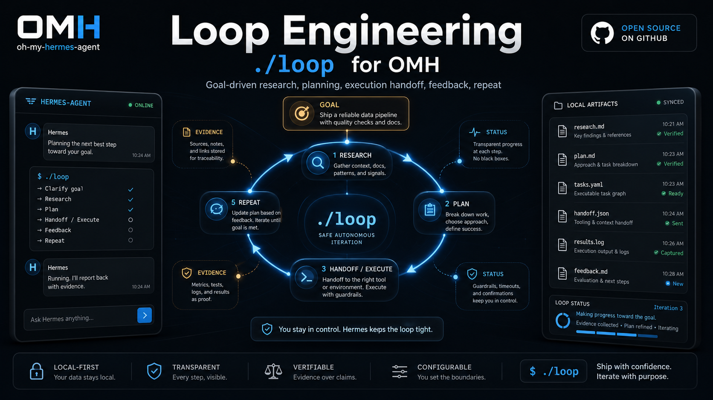

Change the button color.
Route to a direct task or one-cycle delivery workflow. A persistent loop is unnecessary.
New flagship workflow
NewOMH Loop lets Hermes Agent treat a high-level goal as a repeating system only after it decides whether the request is a direct task, a loopable project, a north-star ambition, external waiting, or too unclear to start. Loopable goals then clarify the arena, research the gap, plan the next move, queue a runtime tick, prepare handoff when allowed, evaluate feedback, and continue until evidence, authority, context, or external waiting says to stop.

In OMH, Loop Engineering is the Hermes-facing control plane for work whose right implementation cannot be known upfront. The point is no longer just prompting. The point is giving a clear goal and designing the system that decides what to find, how to process it, when to hand off work, when to wait, and when to stop.
In OMH, Loop Engineering is the operating surface for goals that need bounded discovery, action, verification, and revision.
The goal is not to write a longer prompt. The goal is to define a durable objective, then let the system keep finding gaps, choosing the next step, preparing handoffs, evaluating feedback, and deciding when to continue, wait, or stop.
In OMH,
./loopgives Hermes Agent a visible loop contract for skills, plugins, connectors, subagents, worktrees, and external memory without pretending unobserved work already happened.Loop Engineering is not for goals that are merely large. It is for goals whose correct implementation cannot be known upfront but can be discovered through bounded cycles of definition, action, verification, and revision.
If the goal is too large, the loop becomes fantasy planning. If the
goal is too small, the loop becomes overhead. OMH adds
loopability_assessment/v1 so Hermes can preserve the
ambition while converting it into a current loop goal that has a
bounded arena, observable problem, next verification, and stop
condition.
Route to a direct task or one-cycle delivery workflow. A persistent loop is unnecessary.
Start a loop because the next correct implementation must be discovered and verified.
Keep this as the north star, then propose the first bounded loop goal before any tick advances.
Hermes treats the phrase as a north star, then proposes a first loop goal such as reducing first-run friction without pretending market response was observed.
The loop records each risk, plan, handoff, feedback gate, and checkpoint so the work can continue across context limits.
Hermes cycles discovery, plan, executor handoff, QA feedback, and user-facing status while preserving evidence boundaries.
Verification is part of the loop design, not an afterthought. OMH keeps cheap inner-loop checks close to the current step and reserves outer-loop checks for higher-risk or more semantic judgment. If a check is missing or fails, Hermes should route back to research or plan instead of advancing the queue as if the work succeeded.
Name the cheapest check that proves this step is done before the queue item is prepared.
Keep one planned step, one handoff or execution lane, and one observed verification signal per cycle.
Warnings for verification gap, comprehension debt, and cognitive surrender keep the loop from looking safer than it is.
A chat wrapper can ask OMH for a loop_start_card/v1
before a loop artifact exists. After the user chooses a permission
profile, Hermes can start the loop, tick it, show the prepared
queue and loop engineering snapshot, render a handoff with
verification intent for the actionable item, then close that item
as observed or blocked.
Explain the goal boundary and ask for permission profile.
Prepare the next worktree, subagent, connector, or handoff plan.
Render the selected queue item as executor-ready instructions.
Record evidence refs, or stop the queue item with a reason.